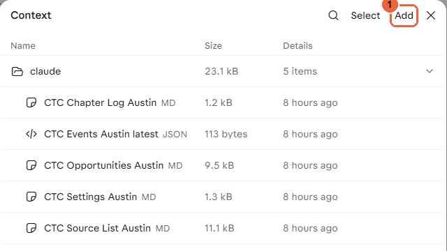

Claude does not know my chapter, or asks the setup questions again
The chat is not inside your project. Open the project and start a new chat there. Claude keeps your settings, source list and log in the project and reads them at the start of every run.
Claude said it could not save a file to my project
It hands you the file instead. Open your project and click Context on the right, then Add, and choose the file. If an older copy is there, remove it. Do not attach it to a chat: a file attached to one chat is not there in the next.

The Context panel of a project. 1 Add puts a file in the project.
The scheduled run did not collect anything
Your computer was off, Claude was closed, or the browser could not be reached. The run says so in one short message and stops. It runs once a week and does not try again, so start it yourself: press Run now on the task under Scheduled in Claude, or say "run the newsletter" in your project. Starting it twice does no harm. If the run is waiting for your approval, open the task under Scheduled in Claude and set Permissions to Auto.
1 The task needs this computer on. 2 Run now starts it by hand. 3 Auto runs without asking.
The week's list came back almost empty
A source broke. Sites change. Ask Claude which sources returned nothing and look at those by hand. Do not assume the city went quiet.
Events came back with names but no dates
Claude could not reach a browser, so Luma gave it only titles. Check the Claude in Chrome extension is installed and signed in to the same account, then say "run the newsletter" again.
A page is asking me to prove I am human
Claude stops and names the source in the review message. Open the page yourself and tell Claude what you see. Claude will not solve these.
I got the review yesterday and the chat is gone
Reply in a new chat inside the project. The week's events are kept there while a review is waiting. If Claude cannot find them, it shows the list again.
I want to change my send day, sign-off or what counts as local
Tell Claude what to change, in your project. It updates your settings, and the weekly schedule if you have one.
I do not want the spreadsheets, or the schedule
Say so. Claude records the answer in your chapter log and stops sending them, or pauses the scheduled task. Change your mind the same way.
The drafts do not sound like me
Say "learn my writing style" and paste three to five things you wrote. Pasting an issue as you actually sent it sharpens it further. The three yellow lines stay either way: rewrite those blocks before you send.
A reader emailed me an event
Name it in your reply to the review and Claude adds it. Or send them the submission form link at the bottom of any issue: it shows up in next week's list, marked as sent in by a reader.
Formatting broke when I pasted into Substack
Almost always a copy button, or the Word copy. Instead:
Open the HTML file in your browser
Click just before the first word at the top
Hold the mouse down and drag to the bottom, past the last line
Copy. Ctrl+C on Windows, Cmd+C on a Mac
Open a new Substack post and paste
My chapter was set up on an earlier version
It keeps working. Install the new plugin and say "run the newsletter". Your Word settings file and your two spreadsheets are still read, and each is replaced by its text file the next time Claude rebuilds it.
I do not have a paid Claude account
The skills need one. Every step can be done by hand: the source list, the weekly sweep, the cut, the write-up. Chapters did it that way before the toolkit. Longer, not worse.
I missed a week
Send the next one. No apology, no explanation. The target is weeks covered over a quarter.
My chapter has a co-lead
Everything works the same. Decide who owns the send.